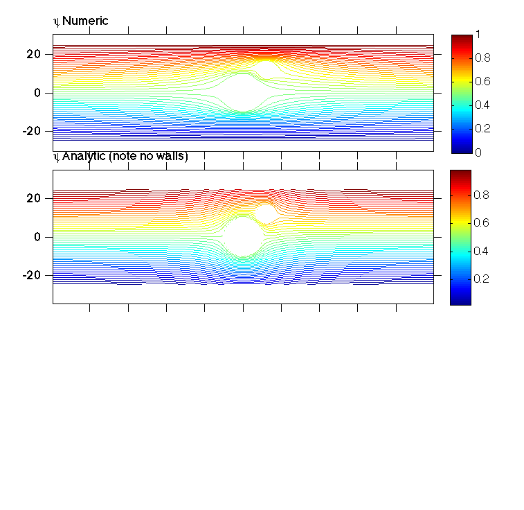
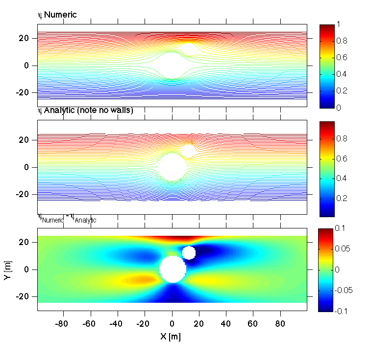
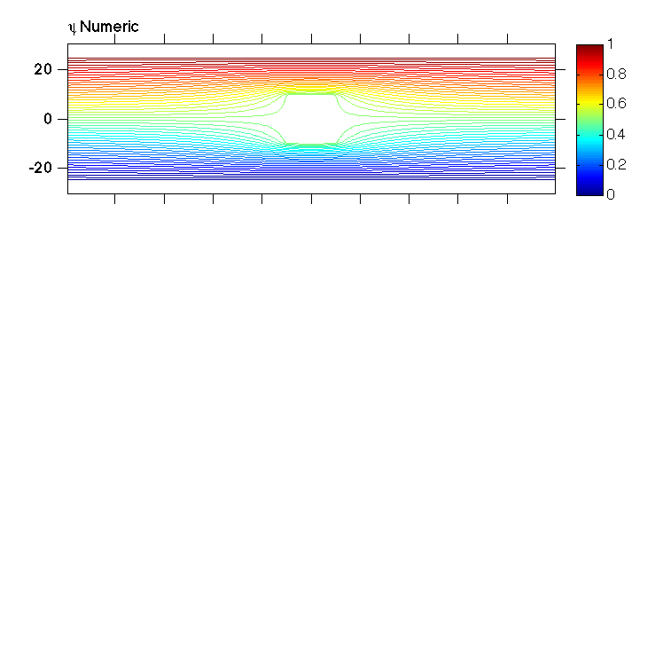

Contents
Solve Laplace's eqn.
nz = 200; nx = 200; psi = zeros(nz,nx); psi(:,1) = (0:(nz-1))/(nz-1); psi = repmat(psi(:,1),1,nx); inz=2:nz-1; inx = 2:nx-1; R = 10; x = 1:nx;x=x-mean(x); z = (1:nz)/4;z=z-mean(z); z = z; [X,Z]=meshgrid(x,z); for i=1:length(x); if length(in)>0 top(i)=max(in); bot(i)=min(in); else top(i)=NaN; bot(i)=NaN; end end x1=-0; z1=-0; R=10; inBod = find((X-x1).^2+(Z-z1).^2<R.^2); frontx = max(find((x-x1)<-R)); frontz = min(find((z-z1)>=0)); R2 = 5; x2=12; z2=12; inBod2 = find((X-x2).^2+(Z-z2).^2<R2.^2); front2x = max(find((x-x2)<-R2)); front2z = min(find((z-z2)>=0)); er=NaN*zeros(1,100000); for i=1:50000; % upstream, downstream psi0=psi; psi(:,1) = (0:(nz-1))/(nz-1); psi(:,end) = (0:(nz-1))/(nz-1); % top and bottom psi(1,:)=0;psi(end,:)=1; psi(inBod)=psi(frontz,frontx); P1=psi(frontz,frontx); psi(inBod2)=psi(front2z,front2x); P2=psi(front2z,front2x); psi(inz,inx)=(psi(inz,inx+1)+psi(inz,inx-1)+psi(inz+1,inx)+psi(inz-1,inx))/4; % Make the leading edge of object all same streamline... if mod(i,1000000)==0; clf contour(psi,25); drawnow; end; er(i)=sum((psi0(:)-psi(:)).^2); if er(i)<1e-9 break; end; end;
Plot solution
clf jmkfigure(1,2,0.8);clf subplot3(3,1,1) contour(x,z,psi,linspace(0,1,50)); %hold on; %contour(x,z,psi,[P1 P1+0.001]); %contour(x,z,psi,[P2 P2+0.001]); axis equal; putonleft(title('\psi Numeric')); colorbar;
ans = 174.0817
Y=Z;
Construct analytic solution
Z = X+sqrt(-1)*Y; r = abs(Z); theta = angle(Z); U = 1/50; w = U*(Z+R.^2./Z); psi1 = imag(w); Z2 = Z-(x2+sqrt(-1)*z2); w2 = U*R2.^2./Z2; psi2 = imag(w2); psiAnalytic = psi1+psi2+0.5; subplot3(3,1,2); bad = find(abs(Z)<R); psiAnalytic(bad)=NaN; bad = find(abs(Z2)<R2); psiAnalytic(bad)=NaN; contour(x,z,psiAnalytic,linspace(0,1,50)); putonleft(title('\psi Analytic (note no walls)')); colorbar; axis equal;
Plot the difference
Note that the analytic solution has no sidewalls, and thus the flow is less constrained near the bodies, significantly altering the streamlines.
subplot3(3,1,3) dp = psi - psiAnalytic; bad = find(abs(Z)<R); dp(bad)=NaN; bad = find(abs(Z2)<R2); dp(bad)=NaN; pcolor(x,z,dp); shading flat caxis([-1 1]/10) axis equal putonleft(title('\psi_{Numeric}-\psi_{Analytic}')); colorbar xlabel('X [m]'); ylabel('Y [m]'); if dop docprint('Assignment3Q1S1','Assignment3Q1.m',500) end
ans = 563.0009
Solve Laplace's eqn.
nz = 200; nx = 200; psi = zeros(nz,nx); psi(:,1) = (0:(nz-1))/(nz-1); psi = repmat(psi(:,1),1,nx); inz=2:nz-1; inx = 2:nx-1; R = 10; x = 1:nx;x=x-mean(x); z = (1:nz)/4;z=z-mean(z); z = z; [X,Z]=meshgrid(x,z); for i=1:length(x); if length(in)>0 top(i)=max(in); bot(i)=min(in); else top(i)=NaN; bot(i)=NaN; end end x1=-0; z1=-0; R=10; inBod = find(abs(X-x1)< R & abs(Z-z1)<R); frontx = max(find((x-x1)<-R)); frontz = min(find((z-z1)>=0)); er=NaN*zeros(1,100000); for i=1:50000; % upstream, downstream psi0=psi; psi(:,1) = (0:(nz-1))/(nz-1); psi(:,end) = (0:(nz-1))/(nz-1); % top and bottom psi(1,:)=0;psi(end,:)=1; psi(inBod)=psi(frontz,frontx); P1=psi(frontz,frontx); psi(inz,inx)=(psi(inz,inx+1)+psi(inz,inx-1)+psi(inz+1,inx)+psi(inz-1,inx))/4; % Make the leading edge of object all same streamline... if mod(i,1000000)==0; clf contour(psi,25); drawnow; end; er(i)=sum((psi0(:)-psi(:)).^2); if er(i)<1e-9 break; end; end;
clf jmkfigure(1,2,0.8); subplot3(3,1,1) contour(x,z,psi,linspace(0,1,50)); %hold on; %contour(x,z,psi,[P1 P1+0.001]); %contour(x,z,psi,[P2 P2+0.001]); axis equal; putonleft(title('\psi Numeric')); colorbar;
ans = 174.0818